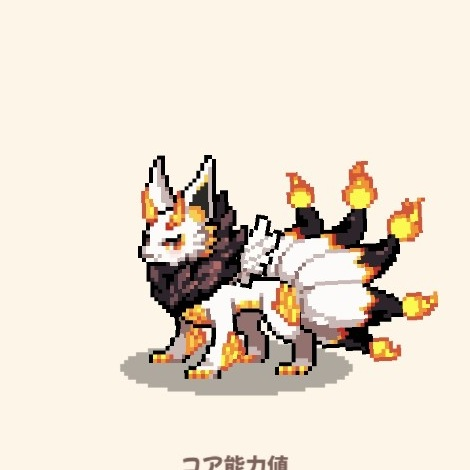
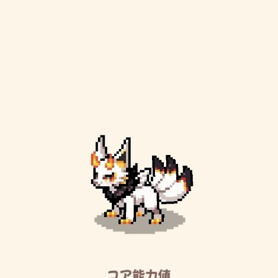

BASIC DATA
基本情報
- レア度
- Epic
- 属性
- 炎・風
- 固有
- 火炎闘魂
- 効果
- 体力が1/3以下の時、炎属性スキルのダメージが1.5倍。
- 入手方法
- 交配
- 交配条件
- 炎属性・風属性を含む
- 交配時間
- 2時間1分7秒 実測

ゲーム内スクリーンショットDRAGON FILE 002
体力が減るほど炎属性スキルが強化される、攻撃寄りの物理型ドラゴン。レベル成長を継続測定中。
BASIC DATA
SKILLS
炎属性で攻撃し、エネルギーを1回復する。
30％の確率で自身の攻撃能力値が1段階上昇。戦闘ごとに1回。
GROWTH FORMS
Lv.5・Lv.15・Lv.50のゲーム内表示。

CORE STATS
| 段階 | HP | 攻撃 | 防御 | 魔力 | 抵抗 | 速度 |
|---|---|---|---|---|---|---|
| ★1 Lv.50 | 1,107 | 1,217 | 732 | 1,027 | 732 | 732 |
| ★5 Lv.5 | 555 | 609 | 377 | 517 | 377 | 377 |
| ★5 Lv.15 | 723 | 793 | 483 | 672 | 483 | 483 |
| ★5 Lv.50 | 1,202 | 1,322 | 793 | 1,114 | 793 | 793 |
GRADE
LEVEL RESEARCH
| Lv | HP | 攻撃 | 防御 | 魔力 | 抵抗 | 速度 |
|---|---|---|---|---|---|---|
| 33 | 1,321 | 1,377 | 939 | 1,153 | 909 | 929 |
| 34 | 1,334 | 1,391 | 948 | 1,165 | 918 | 938 |
| 35 | 1,347 | 1,405 | 956 | 1,176 | 926 | 946 |
各レベルでおおむね約1％増加。丸め処理と進化時補正は継続検証。
PROJECT D REVIEW